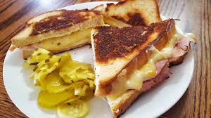

Home
Grilled Cheese

Description
The classic grilled cheese was a staple in my home growing up. Over the years I have expirimented with it, from using butter to maynase to taste the bread, to adding different cheeses and meats.
Cooking Equpiment
- Butter Knife
- Stovetop
- Pan
Ingredients
- 2 slices of bread (any sandwhich bread will work)
- 2 Tbps. Mayonnaise
- Cheese of your choice (can be shreaded or craft singles)
- OPTIONAL - Ham or bologna to go in the middle
Cooking Instructions
-
Spread mayonnaise onto one side of each of the loafs of bread and set to the side.
- If you are using any type of meat like ham or bologna, I reccomend frying it before assemblying the grilled cheese
- Place bread mayonnaise side down into a medium-heat pan. (we want to cook it slow so that the bread does not burn before the cheese melts)
- Add cheese to the bread and top with your meat if you have any (if you add meat, put cheese on both sides of the meat)
- cover the pan with a lid for a minute or so to help the cheese melt some
- Add your second piece of bread mayonnaise side up
- check the bottom pieve of bread to see if it is golden brown, if so flip and cook the other side
- Once the other side is golden, plate and enjoy with some pickles and chips